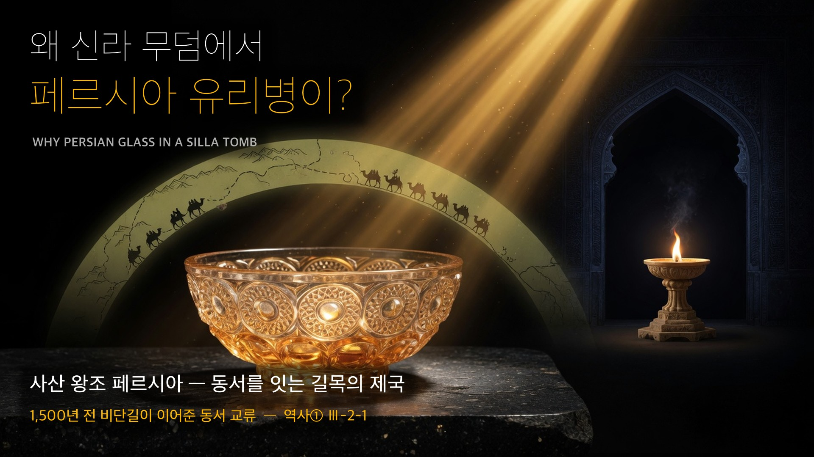
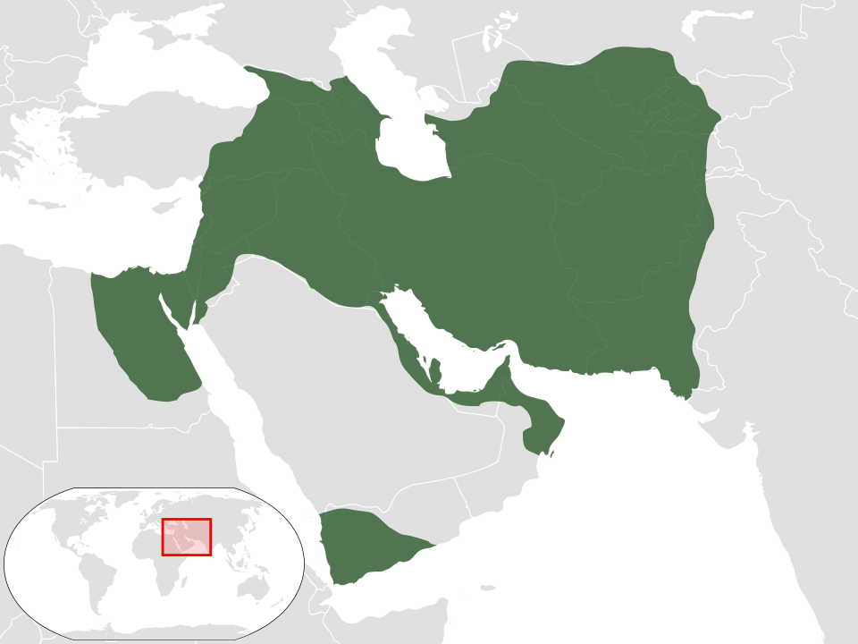

역사① Ⅲ단원 3-2-1 — 왜 신라 무덤에서 페르시아 유리병이 나왔을까? (사산 왕조 페르시아)

역사① Ⅲ단원 3-2-1 — 왜 신라 무덤에서 페르시아 유리병이 나왔을까? (사산 왕조 페르시아)
🎙️ 솔직한 질문부터 하자. "우리나라 역사도 아닌데, 세계사를 왜 배워요? 사산 왕조 페르시아? 들어본 적도 없는데요." — 좋은 질문이야. 오늘 수업이 끝나면 네가 직접 이 질문에 답하게 될 거야(활동 2). 힌트는 의외로 경주에 있다.
🎙️ 경주 국립박물관, 신라 금관 옆 유리 진열장. 낯선 유리병 하나 — 라벨엔 "서아시아 사산 왕조 페르시아 양식". 1,500년 전 한반도 끝 신라 무덤에 페르시아 유리가 묻혀 있었다. 우리 조상의 삶이 이미 세계와 이어져 있었다는 물증이지. 한국사를 제대로 보려면, 한국사가 움직이던 세계를 같이 봐야 한다 — 오늘 그 연결의 한가운데 있던 나라를 만난다.
📌 학습 목표
- 사산 왕조 페르시아의 성립 배경과 정치·경제 특징을 설명할 수 있다.
- 사산조의 문화(공예)와 그 동서 전파를 설명할 수 있다.
- 사산조 문물이 신라까지 온 까닭을 동서 교류로 자기 관점에서 서술할 수 있다.
✨ 오늘의 고급 단어
| 단어 | 쉽게 말하면 |
| 사산 왕조 페르시아 | 3세기 서아시아에 세워진 페르시아 제국 (옛 아케메네스의 부흥을 내세움) |
| 조로아스터교 | 사산조의 국교. 빛(선)과 어둠(악)의 대결을 믿는 종교 |
| 공용어(公用語) | 나라 전체가 공식으로 쓰는 언어 (사산조 = 페르시아어) |
| 총독(總督) | 황제가 지방에 보내 다스리게 한 관리 — 중앙집권 장치 |
| 중계 무역(中繼貿易) | 동과 서 사이에서 물건을 사서 되파는 무역 |
| 비잔티움 제국 | 동로마 제국. 사산조의 최대 라이벌 |
📖 1단계: 경주 유리병의 미스터리
앞 시간 동아시아(위진 남북조)를 봤다면, 이번엔 서아시아다. 경주 신라 무덤에서는 서아시아 ①사산 왕조 페르시아에서 만든 유리그릇이 여러 점 나왔다. 한반도 끝까지 페르시아 물건이 온 것 — 이 한 장면이 그 시대 동서가 얼마나 활발히 이어져 있었나를 보여준다.
💡 왜 하필 유리병? 사산조는 유리 공예로 이름났고, 그 명품이 비단길을 타고 신라까지 흘러왔다. 오늘 그 나라의 이야기를 처음부터 보자.
📖 2단계: 성립 — 옛 페르시아의 부활
3세기 초, 서아시아에서 옛 ②아케메네스 왕조 페르시아의 부흥을 내세우며 ①사산 왕조 페르시아가 들어섰다. 이 나라는 ③페르시아어를 공용어로 삼고, ④조로아스터교를 국교로 정했다. 또 지방에 ⑤총독을 보내 다스리는 중앙집권 체제를 갖췄다.
(교과서 원문: "3세기 초 서아시아에서 아케메네스 왕조 페르시아의 부흥을 내세운 사산 왕조 페르시아가 성립하였다. 사산 왕조 페르시아는 페르시아어를 공용어로 사용하고, 조로아스터교를 국교로 삼았다." — 비상교육 역사① p.76)
💡 헷갈리지 마: 앞 단원 아케메네스 페르시아 사람들도 같은 신(아후라 마즈다)을 믿었어. 하지만 다른 종교도 너그럽게 허용했지(관용). 조로아스터교를 나라의 공식 종교(국교)로 정한 건 사산조가 처음이야. → '믿은 것'과 '나라가 국교로 정한 것'은 다르다! (※ 교사 보충: 아케메네스=아후라 마즈다 숭배+관용 / 사산조=국교화 첫 제도화. 자료편 [Q2+] 참고)
📚 정의형 — 조로아스터교: 선(빛)의 신과 악(어둠)의 신이 싸운다고 본 종교. 불을 신성하게 여겨 '배화교(拜火敎)'라고도 한다. 훗날 유대교·크리스트교·이슬람교의 '선악 대결' 관념에도 영향을 주었다.
📖 3단계: 번영 — 동서를 잇는 길목의 부자 나라
사산조는 동(아시아)과 서(유럽·지중해)를 잇는 길목에 있었다. 그래서 서쪽의 ⑥비잔티움 제국(동로마)·로마와 경쟁하면서도, 동서 사이에서 물건을 사서 되파는 ⑦중계 무역을 거의 독점해 큰 부를 쌓았다. 6세기 중반, 전성기를 이끈 왕 호스로 1세는 비잔티움까지 제압하며 대제국으로 군림했다. (잠시 뒤 활동 1에서 네가 이 왕의 신하가 된다.)
(교과서 원문: "사산 왕조 페르시아는 로마 제국과 경쟁하였으며, 동서를 잇는 중계 무역으로 번영을 누렸다." — 비상교육 역사① p.77)

🏛️ 로마 황제를 사로잡은 나라: 사산조는 로마와 그냥 '경쟁'만 한 게 아니야. 3세기 샤푸르 1세는 로마와 싸워 로마 황제(발레리아누스)를 포로로 붙잡았어(헐!). 게다가 잡아온 로마·시리아 기술자들을 도시에 정착시켜 유리·직물 기술까지 빨아들였지 — 이게 다음 4단계 공예 강국으로 이어진다. (지도서 p.118)
⚠️ 자주 하는 오해: "사산조는 그냥 옛날 중동 왕국"? 아니다 — 비잔티움과 어깨를 겨룬 당대 양대 강국이었고, 동서 교역의 핵심 허브였다.
📖 4단계: 문화 — 유리·금속·직물, 그리고 신라까지
사산조에서는 ⑧공예가 크게 발달했다. 특히 금속·⑨유리 공예품이 유명했고, 직물·염색 기술도 뛰어났다. 이 문화는 ⑩이슬람 세계와 비잔티움 제국으로, 또 비단길(실크로드)을 타고 당과 ⑪신라 등 동아시아에도 전해졌다.
(교과서 원문: "사산 왕조 페르시아에서는 공예가 발달하였다. 특히 금속과 유리 공예품이 유명하였고 … 사산 왕조 페르시아의 문화는 이슬람 세계와 비잔티움 제국에 전해졌고, 당과 신라 등 동아시아 국가에도 영향을 주었다." — 비상교육 역사① p.77)

🥈 사산조 은제 접시(왕의 모습이 새겨짐). 놀라운 건 출토지 — 이 페르시아 명품이 중국 북위(北魏)의 무덤(504년)에서 나왔다. 사산조 공예품이 비단길을 타고 동아시아 깊숙이 전해진 물증이다. 경주 유리병도 같은 길로 왔다. (Wikimedia · CC0)
💡 ★ 핵심 포인트: 그래서 경주 유리병이 설명된다 — 사산조 명품이 비단길을 타고 신라까지! (도입의 답)
📖 5단계: 쇠퇴와 멸망 — 그리고 이슬람의 등장
강하던 사산조도 ⑥비잔티움 제국과의 잦은 전쟁과 내부 반란으로 점차 힘이 빠졌다. 결국 ⑫7세기에 새로 일어난 ⑩이슬람 세력의 공격을 받아 멸망했다.
(교과서 원문: "비잔티움 제국과의 잦은 전쟁과 내부 반란으로 점차 힘이 약해지다가 7세기에 이슬람 세력의 공격을 받아 멸망하였다." — 비상교육 역사① p.77)
🔗 핵심 정리 — 인과 사슬
3세기 아케메네스 계승 표방 → 사산 왕조 페르시아 성립 → 페르시아어 공용어 · 조로아스터교 국교 · 총독(중앙집권) → 동서 길목 입지 → 로마·비잔티움과 경쟁 + 중계 무역 독점 → 번영 → 공예(금속·유리·직물) 발달 → 이슬람·비잔티움·당·신라로 전파(비단길) → 비잔티움과 잦은 전쟁 + 내부 반란 → 쇠퇴 → 7세기 이슬람에 멸망
💡 오늘의 한 줄: 사산조는 동서를 잇는 길목에서 번영하며, 그 문화를 신라까지 퍼뜨린 '교류의 제국'이었다. — 그러니 사산조는 '남의 나라 옛날이야기'가 아니라, 우리 무덤 속까지 들어온 연결의 증거다.
📊 한눈에 비교 — 사산 왕조 페르시아 vs 비잔티움 제국
| 비교 항목 | 사산 왕조 페르시아 | 비잔티움 제국(동로마) |
| 위치 | 서아시아(이란 일대) | 지중해 동부·발칸 |
| 성립 | 3세기·아케메네스 부흥 표방 | 로마 제국의 동쪽 계승 |
| 국교 | 조로아스터교 | 크리스트교 |
| 공용어 | 페르시아어 | 그리스어 |
| 관계 | 서로 최대 라이벌(잦은 전쟁) | 서로 최대 라이벌 |
| 경제 | 동서 중계 무역 독점 | 지중해 무역 |
| 끝 | 7세기 이슬람에 멸망 | 더 오래 존속(훗날 오스만에 멸망) |
❓ OX 퀴즈
| 번호 | 문장 | O/X |
| 1 | 사산 왕조 페르시아는 조로아스터교를 국교로 삼았다. | O |
| 2 | 사산 왕조 페르시아는 그리스어를 공용어로 사용하였다. | X |
| 3 | 사산조는 동서를 잇는 중계 무역으로 번영하였다. | O |
| 4 | 사산 왕조 페르시아는 비잔티움 제국에 의해 멸망하였다. | X |
OX 해설
1. (O) 조로아스터교 = 사산조 국교.
2. (X) 공용어는 페르시아어. 그리스어는 비잔티움.
3. (O) 동서 길목 입지 + 중계 무역 독점 = 번영의 핵심.
4. (X) 비잔티움은 라이벌. 멸망시킨 건 7세기 이슬람 세력.
✏️ 활동 1. 호스로 1세의 신하가 되어 — 어전 회의 결재판
🎙️ 6세기 전성기, 너는 호스로 1세의 신하다. 오늘 어전 회의에 세 안건이 올라왔다. 각 안건에 찬성/반대를 정하고, 오늘 배운 내용을 근거로 왕을 설득하라. (정답 없음 — 근거가 오늘 수업과 이어지는가가 핵심)
| 안건 — 판단 힌트 | 나의 결정 (찬/반) | 이유 (오늘 배운 근거로 한 줄) |
| ① 비잔티움과 전쟁을 계속한다 — 힌트: 잦은 전쟁의 끝은 어땠지? (5단계) | ||
| ② 비단길 상인에게 세금을 더 걷는다 — 힌트: 우리 부는 어디서 오지? 세금이 과하면 상인은? (3단계) | ||
| ③ 조로아스터교 외 다른 종교도 허용한다 — 힌트: 국교로 묶기 vs 아케메네스식 관용, 각각 뭐가 좋았지? (2단계) |
👑 왕에게 올리는 최종 보고 (한 줄) — 세 안건을 다 검토한 신하로서: 우리 사산조가 끝까지 지켜야 할 한 가지는 무엇인가? (길목·중계무역·종교 결집·평화… 네가 고른 것 + 그 이유)
지도 가이드 — 찬/반 양쪽 근거 (정답 없음·근거의 질로 평가)
- ① 전쟁 계속 — 찬성: 비잔티움을 눌러야 동서 길목·무역 독점이 안전(실제로 6세기 중반 제압·전성기). / 반대: 잦은 전쟁이 국력을 갉아먹어 실제 쇠퇴 원인(5단계 회수). 결말을 아는 학생은 반대로 몰리기 쉬움 → "당시 신하는 결말을 모른다"로 찬성 측 입장도 살려줄 것.
- ② 상인 증세 — 찬성: 우리 부의 원천이 중계 무역이니 길목을 지키면 세수 안정(3단계). / 반대: 세금이 과하면 상인이 다른 길(우회로)을 찾는다 — 길목의 부는 '강제 독점'이 아니라 선택받는 길일 때 유지됨.
- ③ 타종교 허용 — 찬성: 아케메네스의 관용이 거대 제국 통합에 효과적이었음(2단계 '국교 구분' 회수). / 반대: 국교는 페르시아 정체성 결집 장치 — 허용 폭이 크면 결집이 약해질 수 있음. 이 문항이 2단계 "믿은 것 ≠ 국교로 정한 것" 구분을 다시 짚는 핵심 회수 문항.
👑 최종 보고 채점 관점: 무엇을 고르든 OK — 오늘 배운 개념(길목·중계무역·국교 결집·평화)과 연결된 근거가 있으면 통과. 세특: 근거 제시·균형 잡힌 판단이 드러난 학생 기록 후보.
✏️ 활동 2. 너의 답 — "세계사를 왜 배워?" (자기 생각 서술)
수업을 다 들은 지금, 친구가 묻는다. "우리나라 역사도 아닌데 세계사를 왜 배워? 사산 왕조? 그게 우리랑 무슨 상관이야?" — 도입에서 미뤄 둔 그 질문에 이제 너의 답을 쓰자. 오늘 배운 것(신라 무덤의 유리병·비단길·길목과 중계 무역…)을 근거로 답하고, 오늘날 비단길 역할을 하는 것(인터넷·물류망·K-팝이 가는 길…)을 하나 들어 "그 연결은 지금도 계속된다"까지 이어 보면 최고. (정답 없음 — 근거가 오늘 수업에서 나왔는가가 핵심. AI에게 묻지 말고 네 판단으로)
지도 가이드 — 기대 답 구조 (3층이면 최상)
① 물증 근거: 신라 무덤의 사산조 유리 = 한국사가 처음부터 세계와 연결돼 있었다는 증거 → 한국사를 제대로 알려면 그 세계를 같이 봐야 한다.
② 패턴 근거: '길목·중계 무역'으로 번영한 사산조의 패턴은 오늘날 한국과 닮았다(반도체·물류·콘텐츠가 동서를 오가는 나라).
③ 현재 연결: 오늘의 비단길 = 인터넷·항로·유튜브 — 신라에 유리가 왔듯 지금은 K-팝이 서아시아로 간다(방향만 바뀐 같은 연결).
⚠️ "시험에 나오니까"는 근거가 아님을 부드럽게 짚기. 한 층만 써도 통과 — 오늘 배운 내용이 근거로 쓰였는가가 기준. 💡 세특: 역사 학습의 의미를 스스로 구성한 답안은 기록 1순위 후보(메타인지·전이).
다음 시간 예고
다음 시간 예고: 이슬람교의 성립과 확산 — 사산조를 무너뜨린 그 이슬람 세력은 어떻게 등장해 서아시아를 바꿨을까?